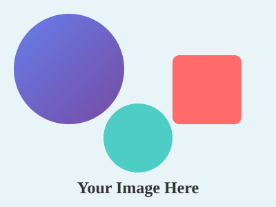

זהו אתר סטטי פשוט שנוצר ללא כלי בנייה או שרת. אתה יכול פשוט לפתוח את הקובץ בדפדפן שלך. זה הפרויקט הראשון שלנו בשיעור 7, והוא מדגים כיצד ניתן ליצור אתר מקצועי עם HTML טהור, CSS נפרד ותמונות SVG. הקוד פשוט, נקי וקל להבנה, מה שהופך אותו לבסיס מושלם ללמידה ופיתוח נוסף.
